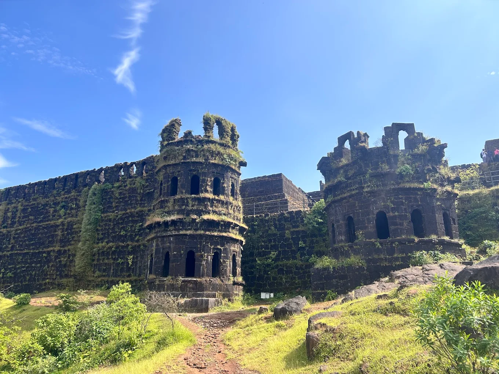

About Fort
Harishchandragad is one of the most iconic trekking destinations in Maharashtra, famous for the breathtaking Konkan Kada cliff. It offers a perfect mix of adventure, caves, temples, camping opportunities, and panoramic Sahyadri views.
With multiple trekking routes ranging from easy to difficult, it is a must-visit destination for trekkers and nature lovers. The fort dates back to the 6th century during the Kalachuri dynasty, and the various caves on top show signs of ancient settlements.
Famous For
Konkan Kada
Campsite
Caves & Tents

Major Attractions
Explore the highlights of Harishchandragad's historic tableland.




Travel Guide
Comprehensive routes to reach the fort from Mumbai.
Option 1: Rail & Jeep via Pachnai (Easy Route)
Take a local train from Mumbai to Kasara station. From Kasara, hire a shared local taxi/jeep to Pachnai village. The trek from Pachnai is the easiest and most direct route to the fort top (~2 hours).
Cost: ₹250 – ₹500 ApproxOption 2: Bus or Jeep via Khireshwar (Moderate Route)
Board a train or bus to Kalyan, then travel to Murbad. From Murbad, take a bus or jeep heading towards Malshej Ghat and get down at the base village of Khireshwar. The trek via Khireshwar is moderate but scenic (~3–4 hours).
Cost: ₹300 – ₹700 ApproxOption 3: Direct Drive
A scenic ~170–200 km road trip from Mumbai. You can drive directly to either Pachnai village (via Ghoti) or Khireshwar village (via Malshej Ghat highway). Secure parking spaces are available at both base villages.
Essential Information
Everything you need to know for a smooth adventure.
Stay & Food
Unique overnight stays are available inside the natural caves or in tents on the tableland. Basic local meals (Pithla Bhakri, Maggie, tea) are served by villagers near the temple area.
Essentials
Carry 3–4L water, good trekking shoes, a warm sleeping bag (temperatures drop at night), a torch/flashlight, a raincoat (monsoon), and a basic first aid kit.
Best Time
October to February is ideal for pleasant cooler weather and camping. Monsoon (June-Sept) is also extremely popular for misty trail walks and lush waterfalls.
Location & Coordinates
Harishchandragad Fort, Ahmednagar District, Maharashtra, India